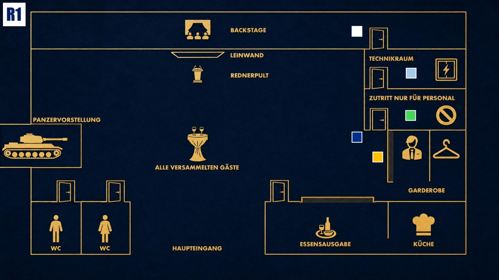

Beobachten & Testen
Lerne die anderen kennen. Finde heraus, wer etwas verbirgt, ohne selbst zu viel preiszugeben.

Das Ziel der ersten Runde
Halte den Fokus auf einem technischen Problem und vermeide, dass jemand den Blackout zu früh als geplant einordnet. Beobachte genau, wer ungewöhnlich ruhig reagiert oder mehr über den Ablauf zu wissen scheint.
Deine Geheimnisse
1. Der bestellte Blackout: Das Licht fiel nicht aus Versehen aus. Jemand wollte, dass es zu einem Moment der Dunkelheit kommt.
2. Finanzieller Druck: Du brauchst diesen Auftrag dringend. Hättest du ihn abgelehnt, hättest du eine große Chance vergeben.
Deine Mission
1. Unschuld mimen: Tu so, als wäre der Blackout ein technisches Rätsel, das dich selbst am meisten ärgert. Vermeide klare Antworten und lenke den Blick auf mögliche Schwachstellen im Ablauf.
2. Reaktionen prüfen: Beobachte genau, wie die anderen auf das Thema Blackout reagieren. Wirkt jemand überraschend ruhig, vorbereitet oder auffällig interessiert?
Deine Erinnerung an 18:00 Uhr

Zum Vergrößern tippen
Du bist auf dem Weg zum Technikraum und siehst Cole aus dem Raum „Nur für Mitarbeiter“ kommen. Kurz davor begegnest du Diana im Mitarbeiterraum sowie Diego und Michael davor. Außerdem hast du Cole durch den Flur huschen sehen.
Mögliche Fragen
An Diana: „Wer außer mir hatte noch Zugriff auf die technischen Abläufe des Abends?“
An Luisa: „Wie sicher ist die Technik bei Stahlmann & Faust normalerweise? Ich kann mir diesen Totalausfall nicht erklären.“